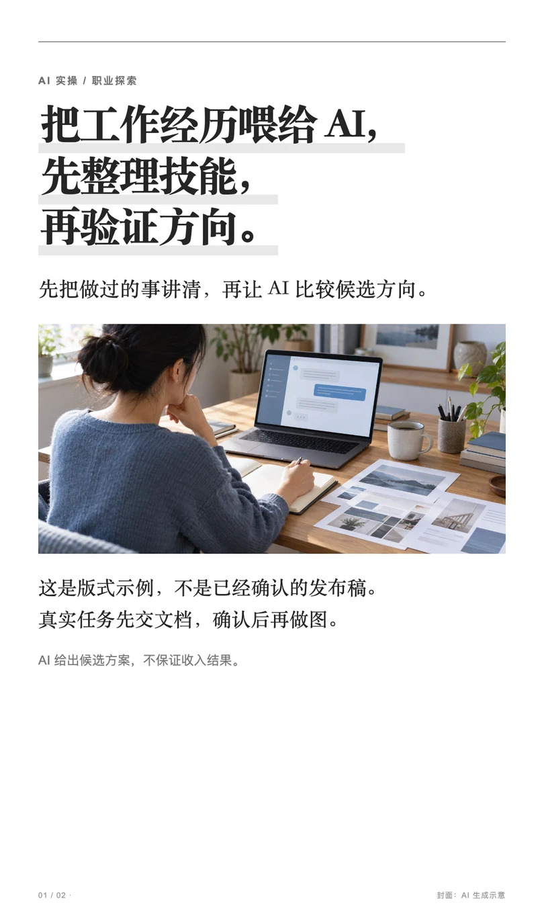
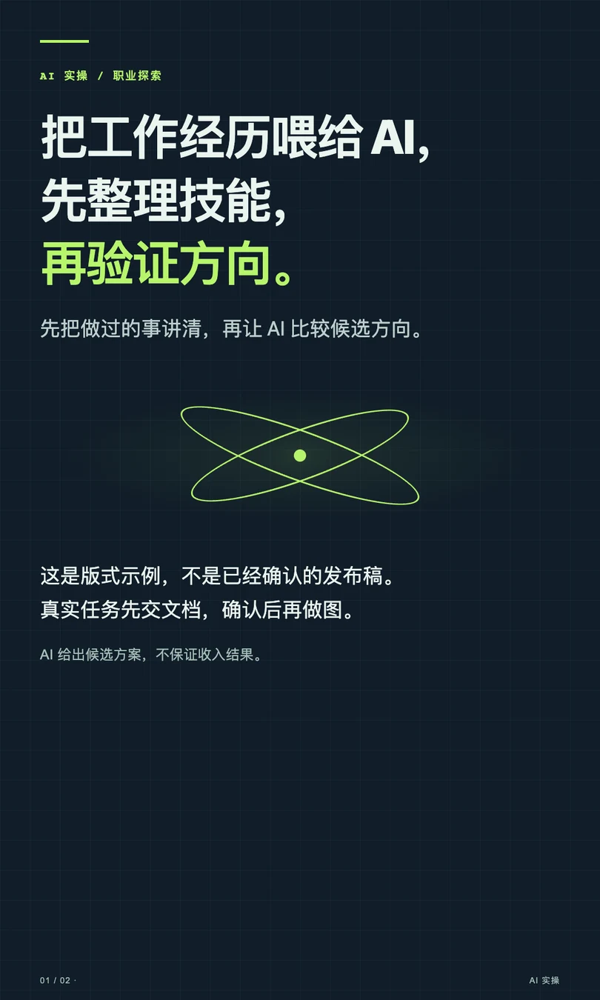
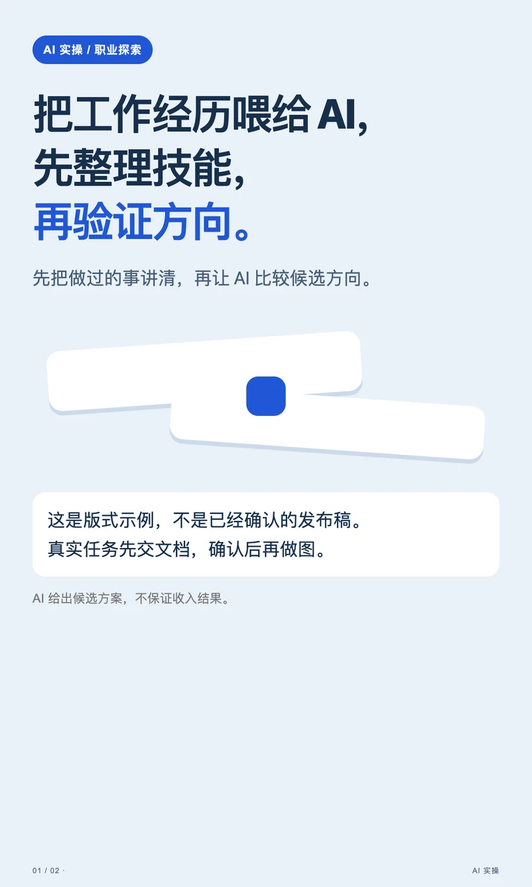
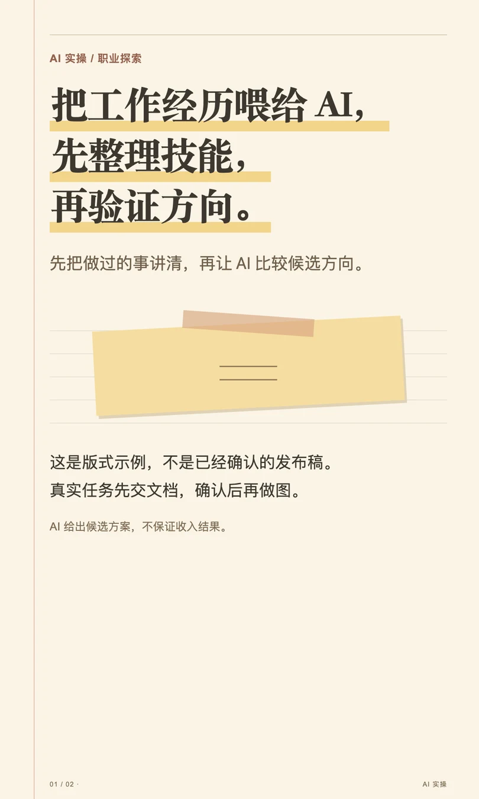
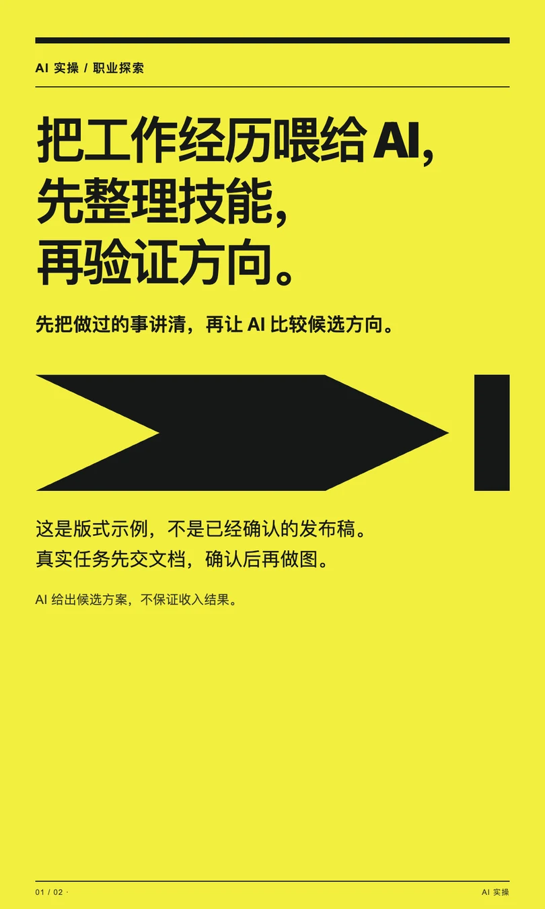

THE STYLE COLLECTION / v0.3.0
同一份内容，
不止一种表达。
5 套封面与内页风格。按内容选择，也可以直接告诉 Skill 你想要哪一套。
01 / 经典书页

深读 · 访谈 02 / 深色科技
资讯 · 工具 03 / 清爽卡片
教程 · 清单 04 / 暖色手账
观察 · 复盘 05 / 大字海报
观点 · 提醒同文案对比 · 匿名预览，非用户成稿 · 经典书页的照片为 AI 生成示意
01 / EDITORIAL
经典书页
保留原版白底宋体与灰色划线，适合深读、访谈笔记。照片封面也是可选项。


02 / TECH
深色科技
墨蓝网格、荧光绿重点、终端式提示框。适合 AI 资讯和产品解析，不必每次配人物照。


03 / CARDS
清爽卡片
浅蓝底与独立信息卡，重点是让读者跟得上。适合教程、清单，步骤与代码保持准确。


04 / NOTEBOOK
暖色手账
奶油纸、边栏线、荧光笔和便签引用。适合观察与复盘，不把他人的经历写成自己的亲测。


05 / POSTER
大字海报
黄黑强对比、大字标题、粗线分隔。适合简短观点；长教程应增加页数或换更适合的版式。


直接这样说
内容已确认，请用清爽卡片风做图，封面用纯文字。
同一文案，先给我深色科技、暖色手账、大字海报三套预览，不打正式发布包。
风格切换不跳过内容确认。这是 Skill 的匿名效果展示，不是在线生成器；更新已安装的副本后才能使用新模板。
查看更新和使用说明 ↗